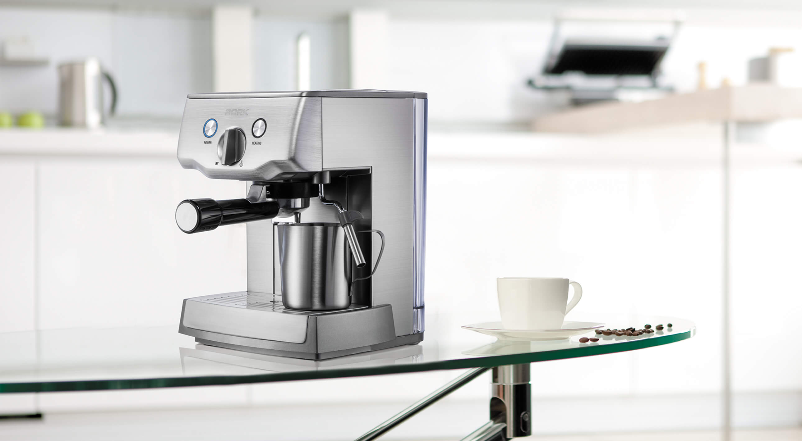
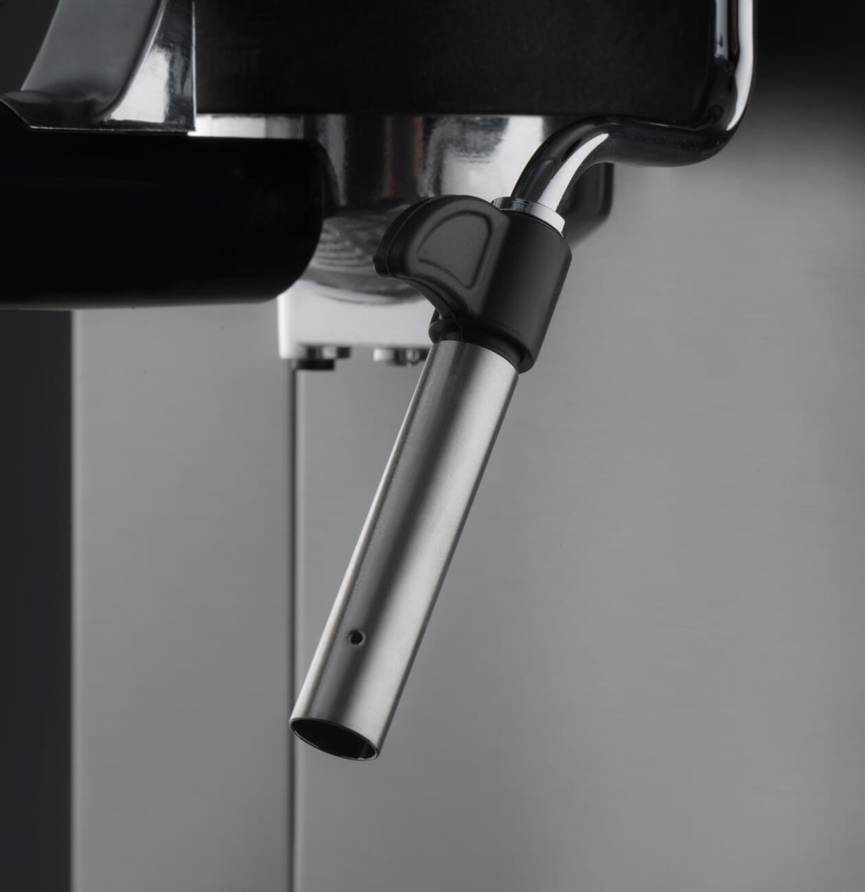
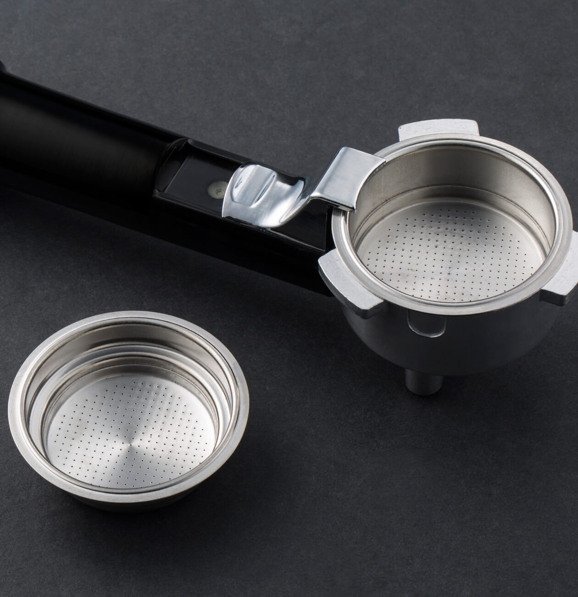
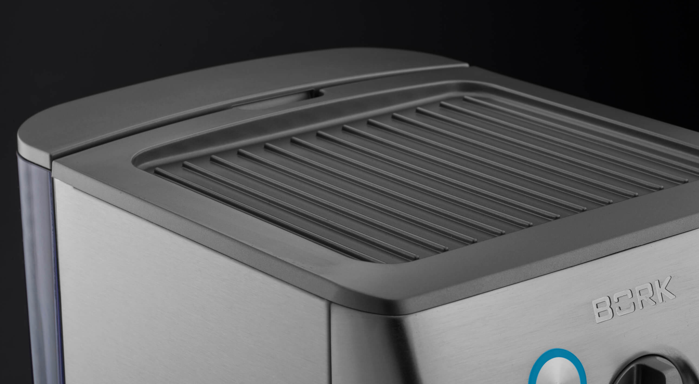
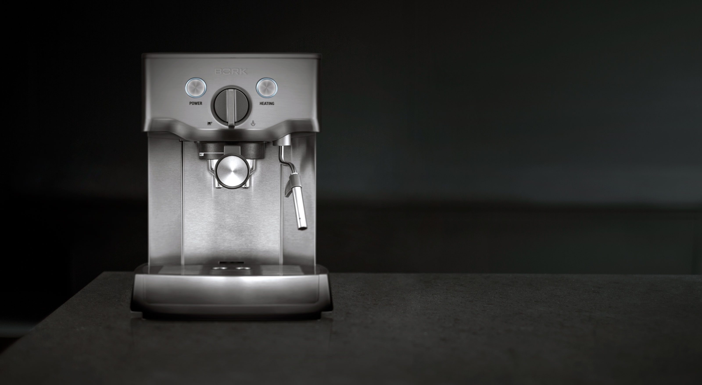

Кофейная станция C500
Удобная и простая в управлении модель для приготовления идеального кофе каждый день.
Идеальный эспрессо каждый день

Мощный нагревательный элемент и помпа высокого давления обеспечивают оптимальную температуру и уровень давления (15 Бар) для приготовления любимого напитка.
Все для идеального капучино
Капучинатор с углом вращения 360˚, устанавливается в удобном для вас положении. Это делает процесс приготовления кофе простым и удобным. Воспользуйтесь капучинатором для приготовления роскошной молочной пенки, как это делают профессиональные баристы по всему миру. Для получения пышной пенки, рекомендуется использовать насадку для вспенивания и цельное пастеризованное молоко с содержанием белка 3,2–3,5% и температурой не выше 7°С.
Персональный подбор вкуса кофе
Благодаря фильтрам с двойным дном, можно подобрать свой уникальный вкус кофе и почувствовать себя в роли настоящего бариста. В зависимости от потребности выберите фильтр для приготовления одной или двух чашек кофе.
Панель для подогрева чашек
Для того чтобы кофе получился более ярким по вкусу, с плотной кофейной кремой орехового цвета и при этом был горячим, необходимо предварительно прогреть чашки. В кофейной станции BORK C500 специально для этого предусмотрен мармит. Панель для подогрева чашек начинает нагреваться сразу после включения устройства.
Технические характеристики

Мощность 1000 Вт
Давление 15 бар
Тип кофейной станции Рожковая
Кофемолка Нет
Капучинатор Есть
Вес 5,1 кг
Срок гарантии 1 год
Подача горячей воды Нет
Объем бака для воды 2,75 л
Фильтр для воды Нет
Предварит.заваривание Есть
Число фильтров для кофе 2 шт.
Тип фильтров На 1 и 2 чашки
Мерная ложка Есть
Кувшин для молока Нет
Макс.высота чашки 95 мм
Подогрев чашек Есть
Резервуар для капель 0,6 л
Автоочистка Нет
Инструмент для чистки Есть
Пенал для аксессуаров Нет
Материал корпуса Нержав. сталь
Страна производства Китай